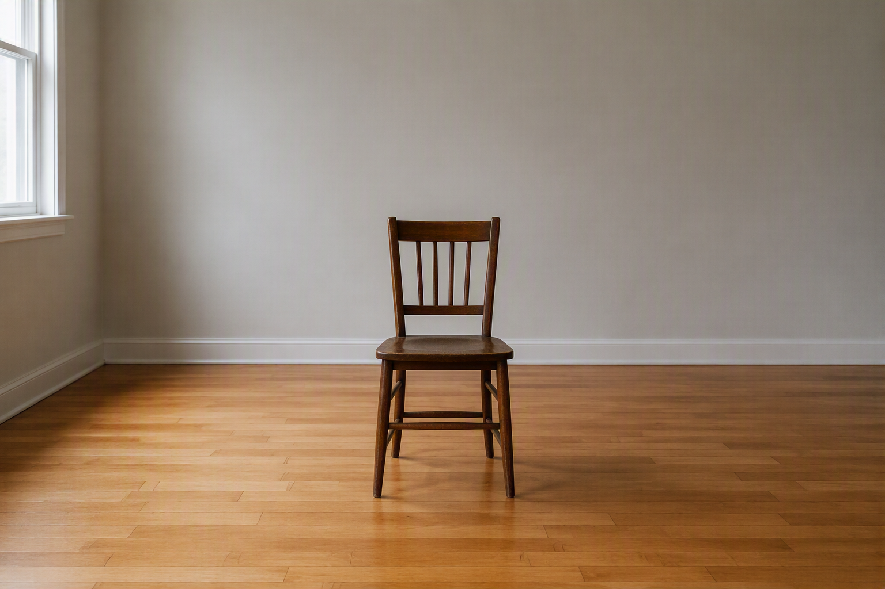
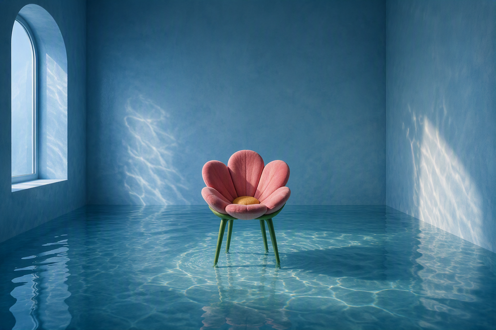
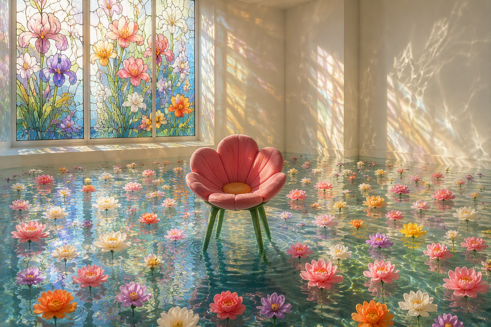
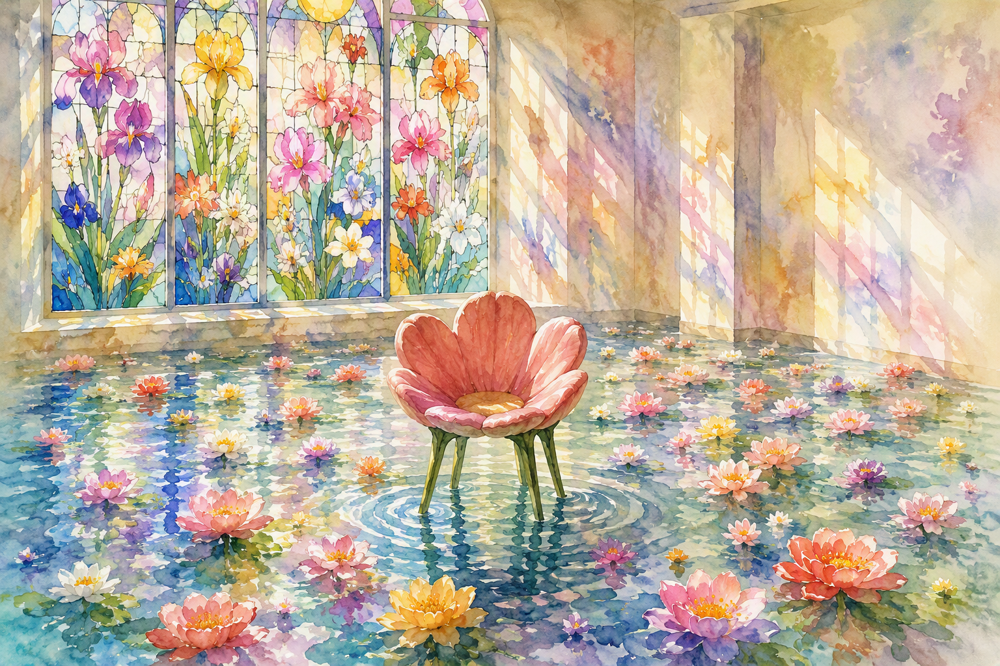
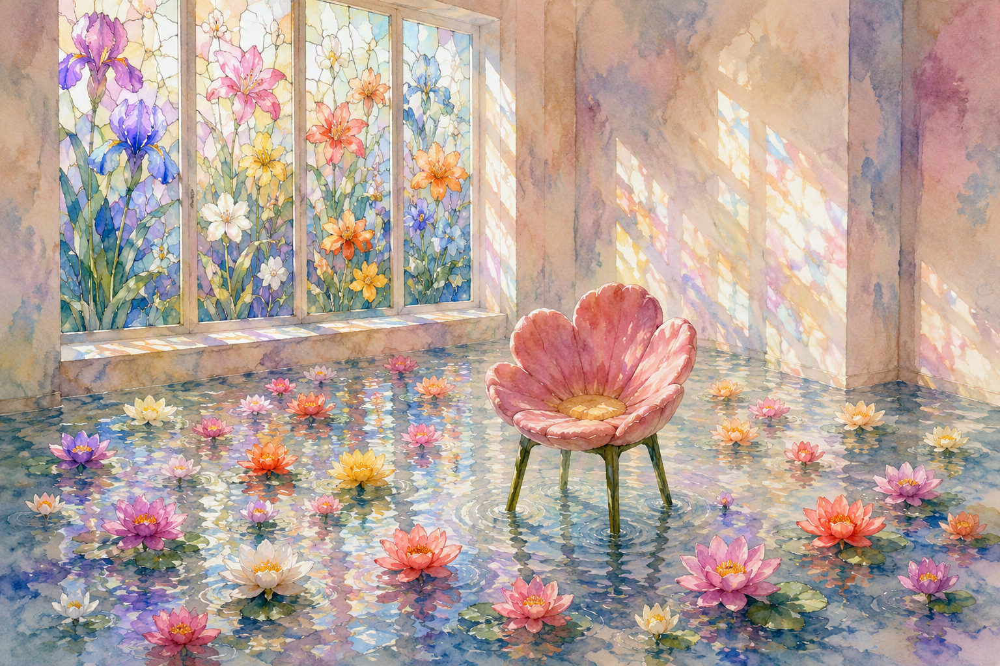
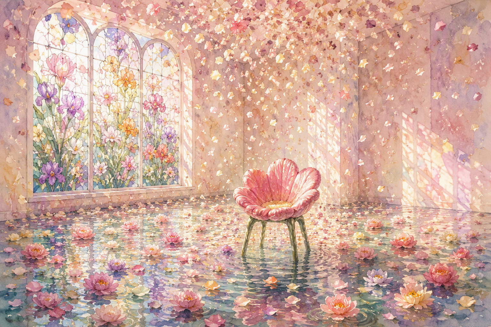
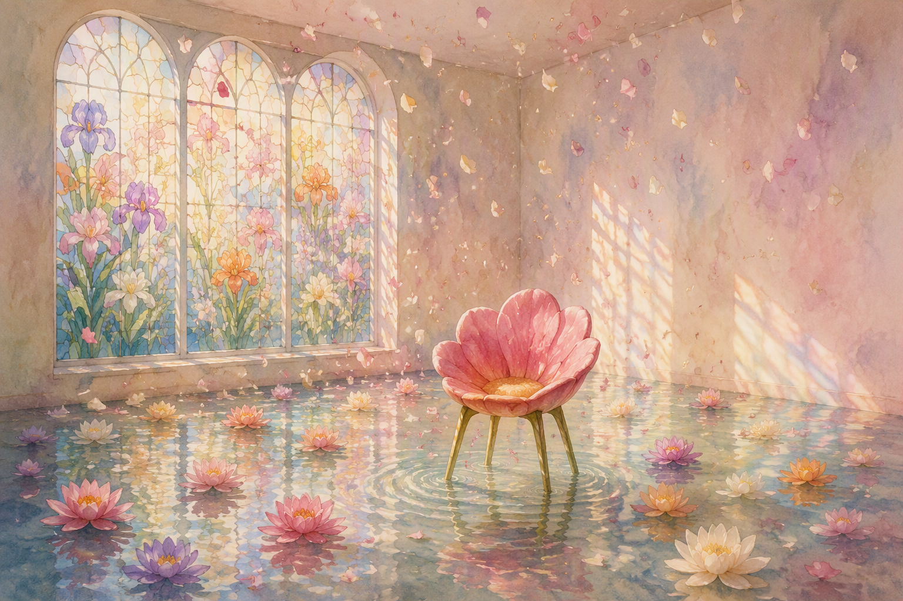
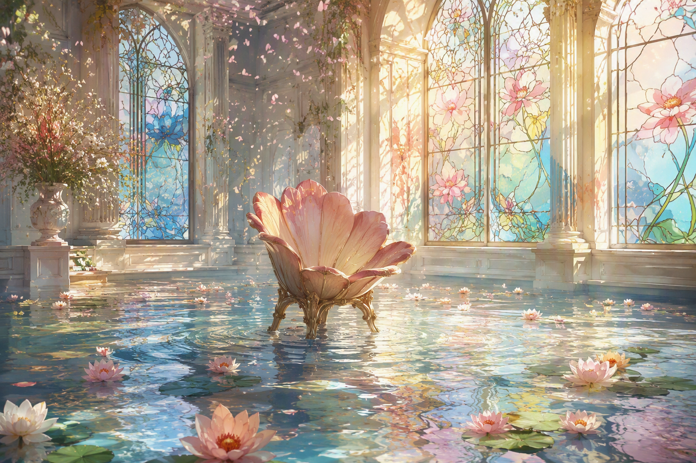
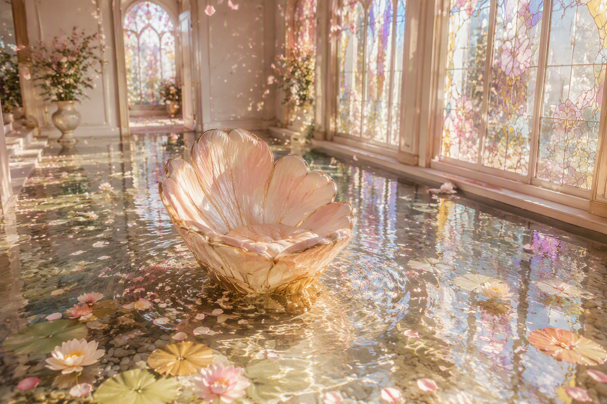
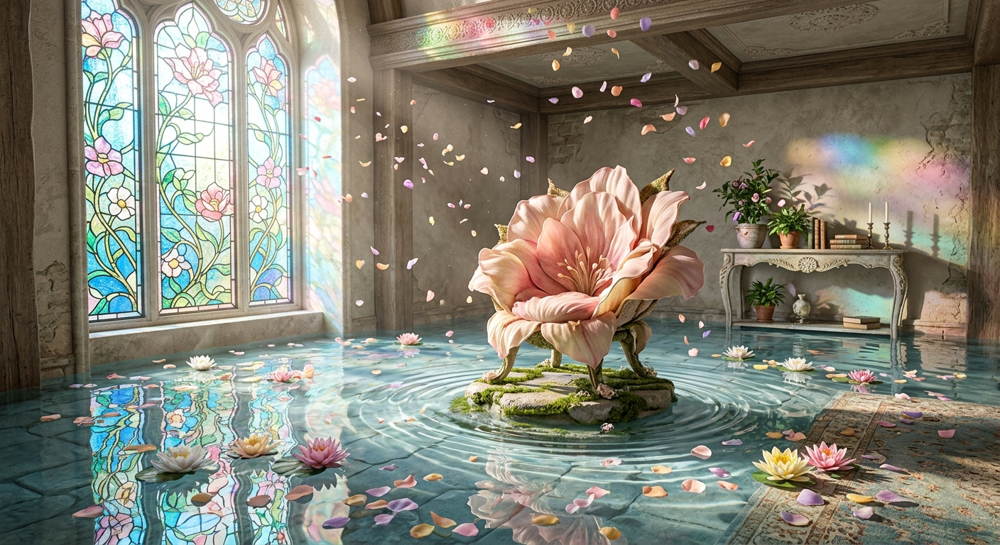

Chair 1
a chair in the middle of a room.

Chair 2
a flower chair in the middle of a water room.

Chair 3
a flower chair sitting in the middle of a bright room, filled with water and floating flowers, with the window a glass painting.

Chair 4
a flower chair sitting in the middle of a bright room, filled with water and floating flowers, with the window a glass painting. watercolor painting.

Chair 5
a flower chair sitting in the middle of a bright room, filled with water and floating flowers, with the window a glass painting. watercolor painting. make it from a 45 degree angle.

Chair 6
a flower chair sitting in the middle of a bright room, filled with water and floating flowers, with the window a glass painting. watercolor painting. make it from a 45 degree angle. have flower confetti fall from the ceiling in a graceful manner

Chair 7
a flower chair sitting in the middle of a bright room, filled with water and floating flowers, with the window a glass painting. watercolor painting. make it from a 45 degree angle. have flower confetti fall from the ceiling in a graceful manner, but don't put too many and make it as natural as possible.

Chair 8
A delicate watercolor painting viewed from a 45-degree angle inside a bright sunlit room partially filled with still, reflective water. In the center stands a chair shaped like a blooming flower, its petals forming the seat. Soft pastel water lilies and floating blossoms drift across the water's surface. Large stained-glass windows feature intricate floral artwork, casting colorful patterns of light across the room. A gentle shower of flower-petal confetti falls naturally from the ceiling, with only a light scattering of petals drifting gracefully through the air. Subtle ripples surround the chair where it meets the water. Dreamy watercolor textures, soft edges, luminous sunlight, airy atmosphere, elegant composition, natural movement, pastel color palette, peaceful and whimsical mood, highly detailed, storybook illustration.

Chair 9
Whimsical watercolor illustration, 45-degree perspective view of a bright sunlit room partially flooded with crystal-clear water. A chair shaped like a large blooming flower sits gracefully in the center, surrounded by floating water lilies and pastel blossoms. Elegant stained-glass windows featuring floral artwork cast colorful reflections across the water and walls. A light scattering of flower-petal confetti drifts naturally from the ceiling, with petals gently swirling through sunbeams and settling onto the water's surface. Soft ripples radiate around the flower chair. Delicate watercolor washes, translucent pigments, subtle brush textures, luminous reflections, airy atmosphere, pastel pinks, peaches, creams, lavenders, and soft golds. Peaceful dreamlike mood, refined composition, natural lighting, highly detailed, serene fantasy interior, storybook quality. make it realistic. make a photo.

Chair 10
Same prompt as picture 9, but on Gemini.